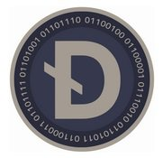

Ahh, anonymous transactions. A refuge for criminals — and for those who would prefer prying eyes not see into their bank accounts. A tool with legitimate uses and illegitimate ones, much like many tools. Darkcoin is the premier anonymous coin, and it differs from the Bitcoin-based anonymity solutions in a few key ways that we’ll cover today.
First, though, coin specs:
– X11 algorithm
– 22M coins at max
– 2.5min block time
– Developed by Evan Duffield and Kyle Hasan
– Website
– White Paper (published March 18th, 2014)
– DarkcoinTalk
– BitcoinTalk Announcement
– Unique attribute: Masternode
– Accusations of instamine
Let me touch on that last point first. Here’s the thread that started off the accusations of instamining by the Darkcoin developers. Here’s the official response on the Darkcoin Wiki. I think the explanation provided makes sense, admits a mistake, and clears up misconceptions. In total, I do not view the instamine as a significant issue. Even if the developers still held the entire instamine — which is very obviously not the case, both because it would be shared by them and early miners and because much of it has been sold — I expect that they understand that dumping their coins for value now would be the equivalent of throwing away huge amounts of money. Darkcoin has a very real future ahead of it. Still, as is, the instamine situation is something investors should be aware of and wary of — do your own research, etc. It’s not enough to keep me away, though.
So, second point, what exactly is a masternode? To put it simply, a masternode is a built-in piece of the Darkcoin protocol that performs a function similar to that performed by Bitcoin mixing services. Masternodes obfuscate transaction inputs and outputs, creating the anonymity that is the primary feature of the coin. In order to run a masternode, you need to leave 1000 DRK in stasis. As a reward for doing so, you are paid a percentage of block rewards, making it a system similar to Proof-of-Stake — coin owners are paid for holding coins and using them to provide a service for the network. Masternodes are technically complex to create and secure appropriately, leaving them primarily owned by the sort of people we want securing our networks — mega-techies. Masternodes are a very cool piece of infrastructure — a clever twist on the PoW/PoS dilemma — and a game-theoretically inventive method of having the network pay for a valuable service while also helping to stabilize the price of the coin.
Third commonly asked question: Is Darkcoin actually technologically distinct from DarkWallet, the better-known Bitcoin anonymity solution? Does it do anything better?
If the answer to this were no, Darkcoin would be a pretty useless coin, wouldn’t it?
Luckily for Darkcoin investors (and developers), the answer is yes. Evan Duffield explains in this brief BitcoinTalk post the difference between the anonymity offered by Darkcoin and that offered by Darkwallet. In particular, his second point resonates very strongly with me — DarkWallet’s biggest problem is that it is seen as a tool only for criminals, for people who have something to hide. Without enough people using it, it may not sufficiently obfuscate transactions. Darkcoin’s advantage, then, is that the entire network is (by default) participating.
Valuing Darkcoin is a difficult question, as the main function of value it provides is payment anonymity, meaning it derives value from currency applications. As such, it should be valued as a currency primarily. So what’s the floor price for it, and where is it derived from?
1. If Darkcoin is the best solution to anonymity, and if the online criminal element continues to improve and update their technology, then we can assume the minimum value of the Darkcoin network will be derived from the total amount of funds desired to be exchanged in a given time period on the black market. If 1MM DRK is on-the-market at a time, and people want to move $1MM USD per 15 minutes, and the average transaction takes six confirmations (15 minutes), and there is no friction between transactions, then 1 DRK is $1 at minimum. This is simply a mathematical understanding of the coin’s use. HavocScope, a for-profit information collecting organization on the world’s black markets, estimates the yearly exchange on the worldwide black market as being ~$1.8TN. With some math: ($1.8TN / (365 * 24 * 4) = $51.4MM per 15 minutes). Important to note is that that is in a theoretical world where ALL black market traffic moved through Darkcoin (something far from impossible, to be honest). Additional important notes: The minimum value is not the average per 15 minutes, but more like the peak 15 minutes — you’d want to know the standard deviation in 15-minute transaction volume to know that. Last, that’s the MINIMUM. It would actually be far, far more valuable than this if the entire world’s black markets moved to it. This is because of points 2, 3 and 4, below, but also because it will certainly be used for legitimate transactions as well.
2. The value can grow from there as with Bitcoin through speculation — if this network will be used for black market transactions because it is the best method for doing so, then speculators can profit by holding Darkcoin and reselling it to those who wish to use it for these purposes. Those users don’t care about the cost per Darkcoin — all they are concerned with is moving $100 from A to B, which is a function independent of per-coin price and of market-cap.
3. Additional value can be added through masternode speculators, who perceive 1 and 2 as true, and choose to speculate on the network’s utility by hoarding Darkcoin to use as a long-term method of value-creation.
4. Additional value can also be added through growth in the black market, spurred by the anonymity Darkcoin offers. If it was easier and more secure to purchase drugs or other illicit items on the black market, don’t you think more people would do so? If it was easier and more secure to launder money or evade taxes, don’t you think more people would do so? I do — a growth in these types of transactions would be a growth in Darkcoin’s value.
Darkcoin is the early frontrunner in crypto-anonymity, offering something BTC can not. If it “wins” in this category, it will be a very valuable commodity. There is a real downside that people often like to bring up, though: What if governments ban it?
My reply is always the same, and rather simple: that hasn’t stopped the $1.8TN black market from forming — why would it stop a currency from coalescing around that market?
Thanks, as always, for reading. I hope you find the discussion insightful.

Add a Tooltip Text